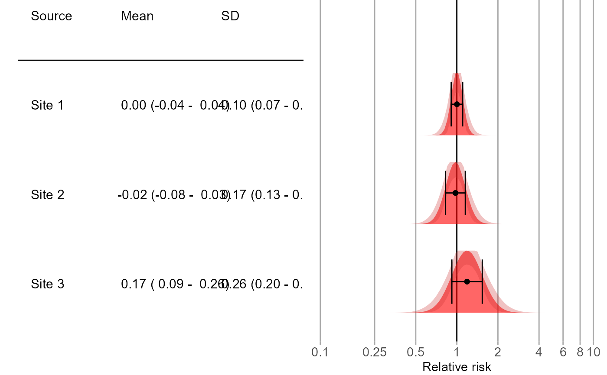

Plot the empirical null distribution for multiple data sources.
plotEmpiricalNulls(
logRr,
seLogRr,
labels,
xLabel = "Relative risk",
limits = c(0.1, 10),
showCis = TRUE,
fileName = NULL
)Arguments
- logRr
A numeric vector of effect estimates for the negative controls on the log scale.
- seLogRr
The standard error of the log of the effect estimates. Hint: often the standard error = (log(lower bound 95 percent confidence interval) - log(effect estimate))/qnorm(0.025).
- labels
A vector containing the labels for the various sources. Should be of equal length as
logRrandseLogRr.- xLabel
The label on the x-axis: the name of the effect estimate.
- limits
The limits of the effect size axis.
- showCis
Show the 95 percent confidence intervals on the null distribution and distribution parameter estimates?
- fileName
Name of the file where the plot should be saved, for example 'plot.png'. See the function
ggplot2::ggsave()for supported file formats.
Value
A Ggplot object. Use the ggplot2::ggsave() function to save to file.
Details
Creates a plot showing the empirical null distributions. Distributions are shown as mean plus minus one standard deviation, as well as a distribution plot.
Examples
# Some example data:
site1 <- EmpiricalCalibration::simulateControls(n = 50, mean = 0, sd = 0.1, trueLogRr = 0)
site1$label <- "Site 1"
site2 <- EmpiricalCalibration::simulateControls(n = 50, mean = 0.1, sd = 0.2, trueLogRr = 0)
site2$label <- "Site 2"
site3 <- EmpiricalCalibration::simulateControls(n = 50, mean = 0.15, sd = 0.25, trueLogRr = 0)
site3$label <- "Site 3"
sites <- rbind(site1, site2, site3)
plotEmpiricalNulls(logRr = sites$logRr, seLogRr = sites$seLogRr, labels = sites$label)
